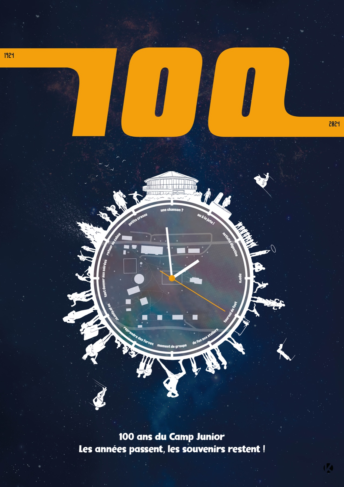

100 ans du Camp Junior
Affiche pour les 100 ans du Camp Junior à Vaumarcus (1924–2024) : la colline et ses activités tournent autour d’une horloge sur fond de ciel étoilé — « Les années passent, les souvenirs restent ! »

Affiche pour les 100 ans du Camp Junior à Vaumarcus (1924–2024) : la colline et ses activités tournent autour d’une horloge sur fond de ciel étoilé — « Les années passent, les souvenirs restent ! »
